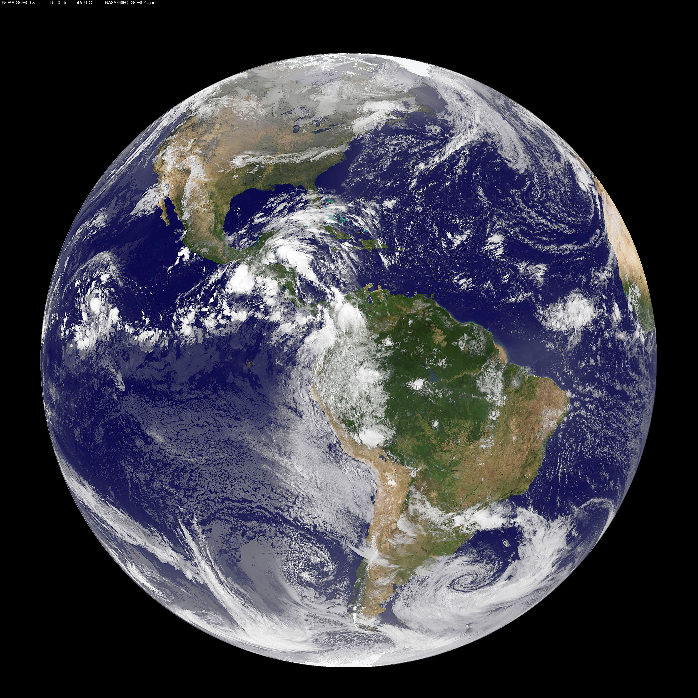
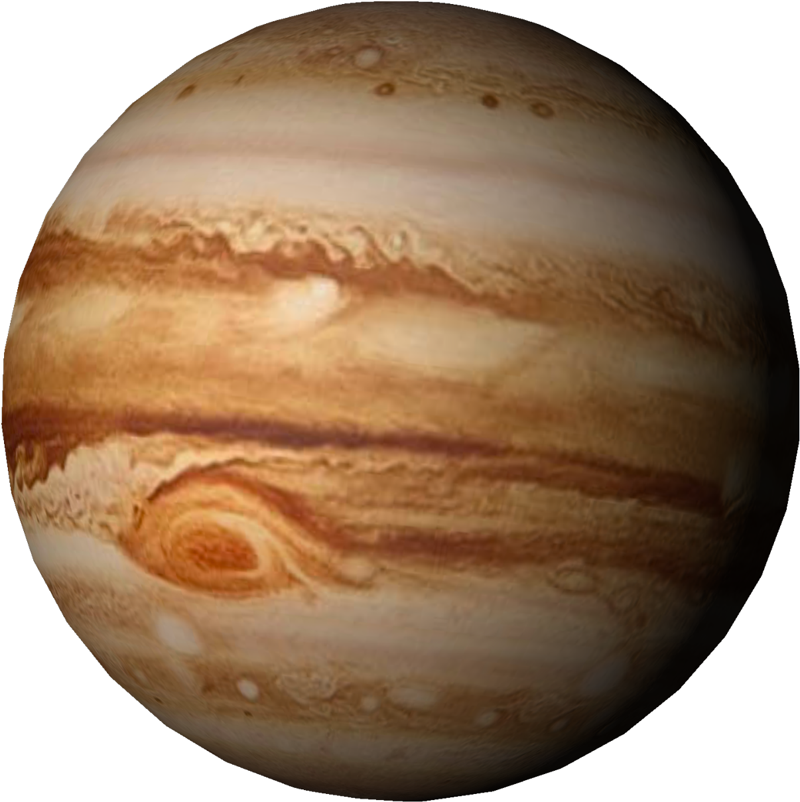

Planet Comparison Table
This table compares Earth, Mars, Jupiter, and Neptune using seven different planetary facts in one single HTML table.
| Planet / Facts | Earth | Mars | Jupiter | Neptune |
|---|---|---|---|---|
| Planet Image |  |
 |
 |
|
| Mass (1024 kg) | 5.97 | 0.642 | 1898 | 102 |
| Diameter (km) | 12,756 | 6,792 | 142,984 | 49,528 |
| Distance from Sun (10⁶ km) | 149.6 | 228.0 | 778.5 | 4515.0 |
| Length of Day (hours) | 23.9 | 24.6 | 9.9 | 16.1 |
| Length of Year | 365.25 days | 687 days | 11.9 years | 164.8 years |
| Number of Moons | 1 | 2 | 95 | 14 |
| Rings | No | No | Yes | Yes |